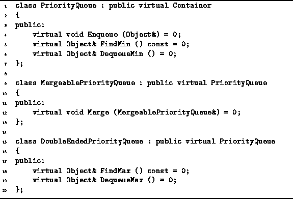
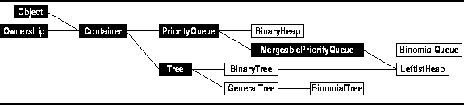
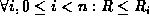

Data Structures and Algorithms
with Object-Oriented Design Patterns in C++
Data Structures and Algorithms
with Object-Oriented Design Patterns in C++A priority queue is a container which provides the following three operations:
Program  gives the declaration of the
PriorityQueue abstract class.
The PriorityQueue class is derived from the Container class.
In addition to the inherited functions,
the public interface of the PriorityQueue class comprises
the three functions listed above.
gives the declaration of the
PriorityQueue abstract class.
The PriorityQueue class is derived from the Container class.
In addition to the inherited functions,
the public interface of the PriorityQueue class comprises
the three functions listed above.

Program: PriorityQueue and MergeablePriorityQueue Class Definitions
Program also declares one additional class--MergeablePriorityQueue.
A mergeable priority queue
is one which provides the ability to
merge efficiently two priority queues into one.
Of course it is always possible to merge two priority queues
by dequeuing the elements of one queue
and enqueuing them in the other.
However, the mergeable priority queue implementations we will consider
allow more efficient merging than this.

Figure: Object Class Hierarchy
It is possible to implement the required functionality using data structures that we have already considered. For example, a priority queue can be implemented simply as a list. If an unsorted list is used, enqueuing can be accomplished in constant time. However, finding the minimum and removing the minimum each require O(n) time where n is the number of items in the queue. On the other hand, if an sorted list is used, finding the minimum and removing it is easy--both operations can be done in constant time. However, enqueuing an item in an sorted list requires O(n) time.
Another possibility is to use a search tree.
For example, if an AVL tree is used
to implement a priority queue,
then all three operations can be done in  time.
However, search trees provide more functionality than we need.
Viz., search trees support finding the largest item with FindMax,
deletion of arbitrary objects with Withdraw,
and the ability to visit in order all the contained objects
via DepthFirstTraversal.
All these operations can be done as efficiently
as the priority queue operations.
Because search trees support more functions
than we really need for priority queues,
it is reasonable to suspect that there are more efficient ways
to implement priority queues.
And indeed there are!
time.
However, search trees provide more functionality than we need.
Viz., search trees support finding the largest item with FindMax,
deletion of arbitrary objects with Withdraw,
and the ability to visit in order all the contained objects
via DepthFirstTraversal.
All these operations can be done as efficiently
as the priority queue operations.
Because search trees support more functions
than we really need for priority queues,
it is reasonable to suspect that there are more efficient ways
to implement priority queues.
And indeed there are!
A number of different priority queue implementations are described in this chapter. All the implementations have one thing in common--they are all based on a special kind of tree called a min heap or simply a heap.
Definition ((Min) Heap) A (Min) Heap is a tree,According to Definition
with the following properties:
- Every subtree of T is a heap; and,
- The root of T is less than or equal to the root of every subtree of T. I.e., , where
is the root of
.
,
the key in each node of a heap is less than or equal
to the roots of all the subtrees of that node.
Therefore, by induction,
the key in each node is less than or equal to all the keys
contained in the subtrees of that node.
Note, however, that the definition says nothing about the relative
ordering of the keys in the subtrees of a given node.
For example, in a binary heap either the left or the right subtree
of a given node may have the larger key.
 Copyright © 1997 by Bruno R. Preiss, P.Eng. All rights reserved.
Copyright © 1997 by Bruno R. Preiss, P.Eng. All rights reserved.